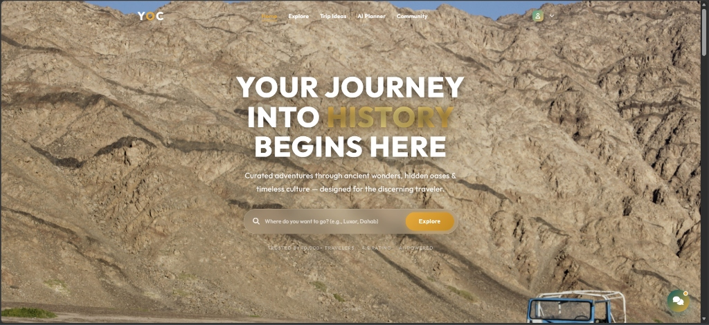

Atef Asklany — Data Analyst & Business Systems Developer
Working at the intersection of Business + Data + Systems + Technology to analyze workflows, uncover insights, and deliver practical digital solutions.
Have a project or data challenge in mind?
Let's discuss how data analytics, interactive Power BI dashboards, or practical business systems can drive value for your organization.
Let's TalkHello, I am Atef Asklany. A graduate of Business Information Systems (BIS) at Egyptian Russian University, operating where business understanding meets data analysis, software systems, and practical problem solving.
Graduated in Business Information Systems (BIS) from Egyptian Russian University — connecting commercial business models with relational database design and software architecture.
I combine business understanding, exploratory data analysis, systems modeling, and technology to build solutions that resolve operational bottlenecks and drive decision-making.
Core Areas of Value
Focusing on practical value and measurable business outcomes across three main disciplines.
Data Analysis
Turning business data into useful insights that support better decisions. Extracting patterns, auditing conversion funnels, and uncovering performance opportunities.
Business Systems
Understanding business workflows and translating business needs into practical system solutions. Designing database schemas, process flows, and operational software.
AI Solutions
Applying AI where it provides practical value to business processes and solutions. Automating manual analytical tasks and enhancing system intelligent capabilities.
Technical & Analytical Stack
Core analytical tools, business systems methodologies, and technical stack applied across projects.
Data & Analytics
Business Analysis & ERP
Systems & Development
My Journey
A story of professional progression — connecting academic foundation to freelancing, data science, and real-world business analysis.
Business Information Systems (BIS)
The foundational starting point of my journey. The BIS program provided me with an integrated understanding of commercial business operations, information systems, database design, systems analysis, and technology — shaping how I connect business workflows with structured data and practical digital solutions.
ITIDA Gigs — Freelancing Program
After building my academic foundation, I took my first step into turning technical capabilities into real freelance work. Completed "Freelancing 102" training, weekly masterclasses with expert coaches, and focus sessions covering profile setup, proposal writing, portfolio creation, financial management, client negotiation, communication, and marketing strategies — culminating in securing my first freelance gig.
Covida — Data Analysis Training
Completed online training in Data Analysis with Covida, marking a focused transition from general freelancing toward a dedicated analytical path.
GCI World 2026 — Data Science & Machine Learning
As my interest in Data Analysis grew, I went deeper into Data Science and Machine Learning through GCI World 2026 organized by Matsuo-Iwasawa Lab at The University of Tokyo. Strengthened skills in Python, statistical thinking, data analysis, and machine learning, successfully passing the final assessment and completing a Final Project analyzing real datasets, building & comparing Machine Learning models, and developing a data-driven business proposal.
Junior Business Analyst
Working within the Business Analysis department at IT SYS, focusing on Odoo ERP. Analyzing company operations, structuring business workflows, translating operational requirements into functional system solutions, and connecting business needs with practical ERP implementations to support organizational goals.
Featured Work & System Architecture
A live showcase of engineered business systems and data analytics projects — from an actively updated portfolio.
YOC (Your Only Chance) — AI-Powered Youth Travel Platform
Engineered an intelligent domestic youth travel booking platform for Egyptian tourism featuring an AI Vibe Itinerary Planner, secure Stripe checkout, customizable group itineraries, and multi-service booking architecture.

Let's work together.
Whether you are looking to audit commercial data, build an executive BI dashboard, or architect a practical business system, I am ready to collaborate.